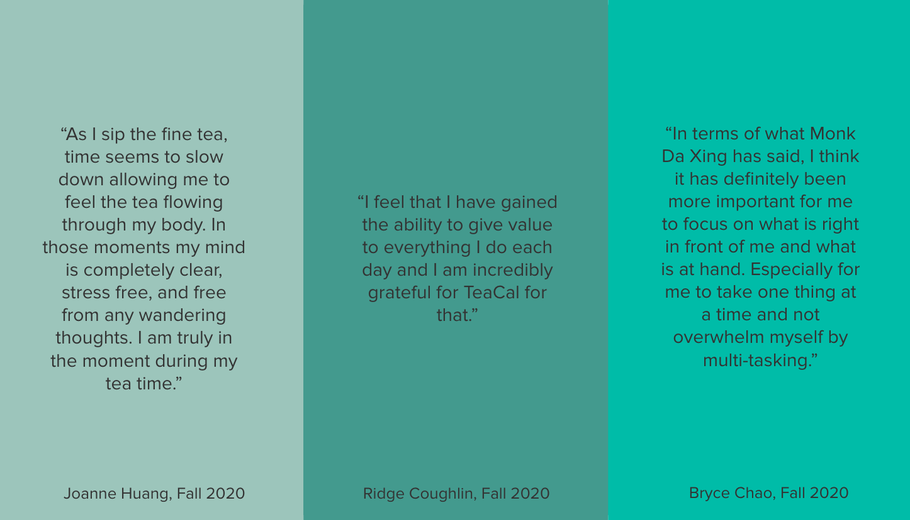

Aastha Upadhyay
2329 Channing Way · Berkeley, CA 94704 · (408) 242-1646 ·
aasthaupadhyay@berkeley.edu ·
Resume
I am experienced in development using Java, Python, HTML/CSS/Javascript, and C++. I've always enjoyed the process of problem-solving whether it be a tricky math problem or a bug in my code. Although it's quite difficult to believe that anyone would enjoy a process as cumbersome as debugging, rather I like to think of it as a road block on the way to developing a feature that I'm so excited about that I'll stop at nothing to break down that road block. I'm most content when I achieve a state of flow while working on something that is both challenging and something I'm passionate about. Aside from the satisfaction of knowing I worked through difficult problems, I aspire to work on difficult, meaningful problems whose solutions will help people better interact with their worlds and ultimately create a positive impact in people's lives.
Projects
Click on each project for a pop-up with more info!
Education
University of California Berkeley
Bachelor of Arts
Computer Science with a Minor in Buddhist Studies
August 2019 - Spring 2023
Coursework
The Structure and Interpretation of Computer Programs
Data Structures & Algorithms
Designing Information Devices and Systems I
The Foundations of Data Science
Currently taking: Discrete Math and Probability Theory
Principles and Techniques of Data Science
Skills
Programming Languages & Tools
- Java
- Python
 C++
C++- SQL
- PHP
 Scheme
Scheme- HTML
- CSS
- JavaScript
- Android SDK
- Python Libraries: pandas, NumPy, matplotlib, seaborn
Interests
For the past year, I've been a DeCal Facilitator for a class called TeaCal: An Exploration of Mindfulness and Meditation. A DeCal is a 1 unit class led by UC Berkeley students, and I teach this class along with three other Cal students. Along with my passion for tea, I really enjoyed the class as I remember feeling a sense of calmness and total awareness when I first joined the DeCal and steeped tea myself. I hope to continue this course for all of my future semesters as Berkeley, with the hope of teaching other students about how they can apply mindfulness to their lives and hopefully notice a change in their life as I have ever since I practiced meditation more regularly. I am particularly interested in Chan or Zen Meditation, my most common practice being silent sitting meditation.
Additionally, I love to play and watch basketball. This year I'm in a fantasy basketball league so I've been able to catch more games than usual with the hopes of watching my roster's players put up some awesome stats. In general, I love to be outdoors whether it be playing ball, spikeball, hiking, etc. Another interest of mine is trying new foods and drinks! Thus far, I must say my favorites are vegetable pho, vegan sushi, and just about any type of boba.
Here is a video of a steeping of Alishan Oolong Tea from when I visited Lake Tahoe and some quotes from past students: 